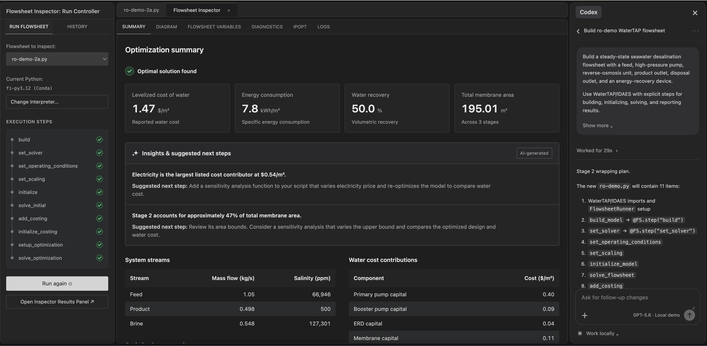

Keep inspection alongside code
Embed model inspection in VS Code so engineers can move between source code, AI tools, and visual feedback without switching to a separate report.
PrOMMiS · Flowsheet Inspector
A visual inspection layer inside VS Code that helps engineers understand complex optimization models and evaluate code developed with AI assistance.

Building computational models requires specialized programming skills, even for experienced engineers. But writing the code is only part of the challenge. Understanding how the underlying model works and whether it accurately represents the intended system can be even more difficult.
AI-assisted coding introduces additional uncertainty, as generated code may contain errors or produce misleading results. By creating visual abstractions of complex models, we can help engineers inspect, understand, and evaluate their work, whether the code was written by a person or generated by AI.
Key interactions
Embed model inspection in VS Code so engineers can move between source code, AI tools, and visual feedback without switching to a separate report.
Reveal the functional structure of a flowsheet and, after execution, aspects of its underlying model definition that are hard to understand from code alone.
Give engineers a visual way to assess whether their model reflects their intentions, including when AI helped generate the code.
Read the research, problem reframing, design rationale, and product details.